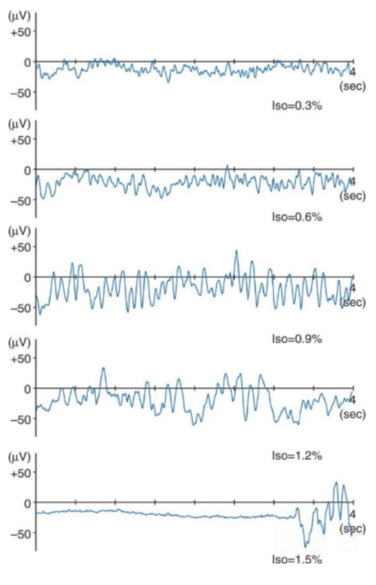
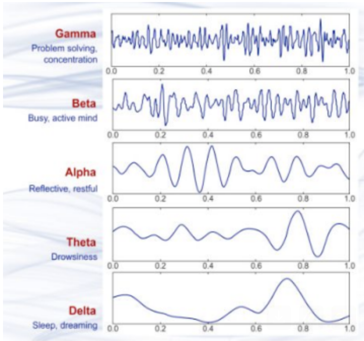

Medicine • Chemistry
How does General Anesthesia work? A general overview
How does general anesthesia work?
All general anesthesia work via the systemic circuit, which is the same system in which blood is carried around the body through a series of blood vessels. The brain processes stimuli and brain activity functions through the use of neurons, more specifically, electrical impulses that travel down these neurones make up brain activity. For an anaesthetic to work, it must bind to a specific region of a protein receptor on these neurons called the gamma-amino-butyric acid (GABA) receptor. These receptors are widely distributed on neurons throughout the central nervous system (CNS) and are inhibitory receptors, this means that when GABA (a neurotransmitter) binds to it, it is harder for electrical impulses to be sent to and received from the brain.
However, when an anaesthetic is introduced, it binds to a specific region of the receptor called the allosteric region and changes the shape of the receptor. As a result, it makes the receptor have a higher affinity to the GABA released from the presynaptic membrane. This means more GABA can bind to the GABA receptors, making it very difficult for an electrical signal to be carried through a synapse and to/from the brain. This is why those under anesthesia cannot move or control their body as there are no signals being sent to their muscles, telling them to move. This is also why those under anesthesia require respiratory support as muscles of the lungs cannot support breathing, this is also the reason why those under anesthesia struggle to remember what happened during the surgery as no information is sent to the brain about the surroundings.
This same process also affects glutamate receptors- which act as excitatory receptors, meaning if a neurotransmitter binds to it, it is easier for an electrical signal to be sent. So to reduce the chances for these signals to be sent, anesthesia will cause these receptors to change shape and become harder to bind to their relevant neurotransmitter.
How are they given?
General anesthesia is given through one of two administration routes- intravenous and inhalation (into the blood or breathed in). Intravenous anaesthetics usually have effects such as: less muscle suppression, faster action and less postoperative nausea than inhaled anesthesia, which is why they are preferred over the inhalation method.
Effects of anesthesia on brain activity
There are 5 states of consciousness, each of which can be represented by analysis of brain waves. These graphs can be recorded using an electroencaphalogram (EEG) by putting small sensors onto the scalp to pick up electrical signals produced by the brain. The lower the frequency of brain waves, the less consciousness a person has. These EEGs can also be analysed to diagnose and treat conditions such as tumors and dementia, however, it is mainly used for epilepsy to identify the type of epilepsy a patient may have.


In the figure displaying the different concentrations of iso (isoflurane- a general anesthetic), it is shown that increasing the concentration of isoflurane decreases the frequency of brain waves. 1.5% isoflurane is enough to induce a sleeping state similar to delta, which is used during surgery and isoflurane 0.3% still reflects an awake and active state, showing lower concentrations to be ineffective in inducing unconsciousness. If too much anesthesia is given, it can cause serious problems such as respiratory problems and even death in extremely rare cases. Common general anesthesia include but are not limited to: ketamine, propofol, isoflurane and sevoflurane. Different anesthesia are given as some are longer lasting than others, lasting up to hours for longer operations and some last for a short period, used for short procedures.
The future of anesthesia
Right now, anesthesia drugs and delivery systems are not perfect as 1 in 1000 patients were reported to be awake during surgery and machine faults are somewhat frequent with problems such as malfunctions in gas supplies and ventilators. Currently, new methods of delivering anesthesia and new drugs are being developed, the newest drug being Remimazolam, approved for use in Japan and Belgium in 2020 and then China in 2021. In addition, drugs are also being developed to help with speeding up patient recovery and remove any probability of after effects. As of the moment, general anesthesia is safe and risks are extremely rare, however, the chances are never 0 as our current knowledge about consciousness and the brain is limited.